KINGDOM'S EDGE
Bardoon is a very large and old caterpillar that went up to Kingdom's Edge in hopes of escaping the Infected. He is quite knowledgable on Wyrms despite not being one himself. He is also one of the few we meet that can tell when we have used the Dream Nail on them and who do not take damage when used.

FUNGAL WASTES
Bretta is a hopeless romantic who hopes to find her prince charming. She does- the Knight, who listens to her muttering to herself in the dark. She eventually leaves Hallownest after realizing she won't be able to find her destined companion if she sits around and keeps waiting.

Grimm's Tent | Dirtmouth
Brumm is an accordition player inside Grimm's tent. He has second thoughts about the Ritual and plans to disrupt it by destroying the Nightmare Heart. Should the Knight choose to banish the Grimm Troupe, he offers to help them yet does not resent the Knight should he choose to complete the Ritual.

JONI'S REPOSE | HOWLING CLIFFS
Joni was just a humble bug that gave blessings that turned fluids into lifeblood, a health buff that does not regenerate but allows you to take more damage. She passed at some point, due to unspecified reasons. You may use dream nail on her when you have picked up her blessing and her spirit appears.

FORGOTTEN CROSSROADS
Salubra is well-versed in the art of Charms and Charm notches, collecting and selling them to passerby in exchange for Geo (currency). She is unaware of the fall of the Kingdom. You may buy her blessing for 800 Geo, which generates SOUL while at rest on a bench.

Wanderer
Cloth is courageous warrior who is on a quest to prove her strength and bravery. However, due to her fearful nature, she sometimes escapes her foes by hiding underground and sleeping, much like real life cicadas which take a few years to come out of the ground. If the Knight helps her fend off some enemies at the end of the Failed Tramway, she helps the knight fend off the Mantis Traitors. Together, they fight against the Traitor Lord.

DIRTMOUTH
Confessor Jiji was asleep for a long time, hidden behind a stone door at the base of Crystal Peak. She woke up when the Knight entered, immediately noticing how much the Kingdom has decayed. She has sensed the Radience's presence in her sleep, wondering what would happen should she fall asleep again. She offers to recover the Knight's Shade from wherever it spawned in the world for Rancid Eggs.

ALL MAJOR AREAS
Cornifer aspires to map the entire Kingdom of Hallownest, appearing in every place he sells the map of. The Knight first encounters Cornifer in the Forgotten Crossroads where he tells the Knight to visit his wife's (Iselda) shop in Dirtmouth. He can be heard humming from across the room, scattered papers leading to where he sits, mapping out the zone.

Dirtmouth
Divine is looking for the source of the smell coming from below her tent, which happens to be Leg Eater. She upgrades the Fragile Charms made by Leg Eater into Unbreakable Charms (by eating and excreting them) for a hefty amount of Geo (9000+). If the Knight upgrades all the Fragile Charms and equips one of them and visits to Leg Eater, he goes aboveground to find Divine. Upon returning to Divine, the Knight notices the Leg Eater's claws discarded on the floor of her tent.

Greenpath, Resting Grounds
The three dreamers, Monomon the Teacher, Lurien the Watcher, and Herrah the Beast, are beings who sacrificed their bodies and minds to contain the Infection through their eternal rest, sealing the Hollow Knight away in the Dream Realm. They must be defeated by the Knight with the Dream Nail and killing their Dream form. Only then will the Knight be able to enter the Black Egg to get rid of the Infection once and for all.

Dirtmouth
Elderbug is the last and oldest resident of Dirtmouth. Despite this, he was not around for the fall of Hallownest, indicating how long ago the Infection first started. He has seen many travelers go into the Forgotten Crossroads only to never return. This has made him pessimistic and a non-believer in dreams. He is the first to warn the Knight about the dangers ahead caused by the Infection and continues to give the Knight advice about the next area it should travel to.

City of Tears
Eternal Emilita used to be among the upper echelon in Hallownest's society, but was cast out. Ironically, now, they live while the rest of Hallownest's upperclass wanderers around, dead and mindless due to the Infection. This fact brings them great joy. Their room, hidden behind a series of hidden walls, can be used as a Shortcut between the Royal Waterways and the City of Tears.

Junk Pit
The fluke hermit is the first sentient, uninfected and able to speak fluke that the Knight meets. She collects the junk from the Junk Pit, regarding it as her mother's (Flukemarm) treasures. She notes that her mother appears to be angry, hinting at infection. She can be found at the Northeastern side of the Junk Pit through a tall passage.

Junk Pit
The Godseeker carries an entire tribe of Godseekers in her mind, in a complex dream world known as the Godhome. They originate from the Land of Storms, where they were abandonded by their gods. They have come to Hallownest looking for new gods using a Godtuner, a device used to find the resonance of powerful beings such as the Pale King or the Radiance. At some point, for unknown reasons, the Godseeker went into hibernation and was locked away in a sarcophagus which was washed down the Waterways into the Junk Pit, where it can be unlocked using Simple Key.

Resting Grounds
The Grey Mourner (real name is Ze'mer) was originally one of the Five Great Knights of Hallownest. Her quest entails delivering a flower to her late lover's grave in the Queen's Gardens, who was the daughter of the Traitor Lord. However, the mantis tribe denied their union because she was not a native, coming from a kingdom she calls "Lands Serene", where the Everblooms come from (also known as Delicate Flowers). After her quest is completed, she dissipates, leaving behind a Mask Shard.

Forgotten Crossroads
The Grubfather mourns the lost gurbs who have been stored in jars around the Kingdom by The Collector. Grubs are known for their keen sense of direction, excellent tunneling skills, and fascination with shiny things such as Geo and Relics. Freeing some grubs will prompt the Grubfather to reward you with an amount of Geo and other items corresponding to the amount of grubs you have freed.

Beast's Den
Herrah the Beast is the mother of Hornet, once the Queen of the Spider Tribe, but now is laid to eternal rest as a Dreamer. She was also originally a member of the Weavers from Pharloom, but married Deepnest's sire, leading her to become queen. When her partner died, it was impossible for her to have a child, so she became a Dreamer on the condition that the Pale King would father her child, who would become Hornet. However, she and Hornet were not that close because she had to become a Dreamer.

The Hive
Vespa was the monarch of the Hive before it was consumed by the Infection. This occured because at some point in time due to unknown reasons, Vespa passed away, unable to leave the Hive due to her large size. Vespa had declined the Pale King's offer to join the Kingdom of Hallownest, preferring to keep to the walled-off tribe of the Hive. After Herrah became a dreamer, she trained and raised Hornet, leading her to adapt her fighting style with her Needle being made of Hivesteel.

Wanderer
Hornet is the half-sibling of the Knight and all the Vessels as they share the same father (the Pale King). She is a skilled warrior who seeks to protect the ruins of Hallownest and find a solution to the Infection, just like the Knight. She is fought twice, as the Protector and as the Sentinel. Throughout their journey, she helps out the Knight differently depending on the actions the player takes. Her fate depends on the path that the Knight chooses, either becoming a Dreamer to seal the Black Egg (Sealed Siblings), never becoming involved without the Void Heart, or having to move on with either the Knight's death (Dream No More) or the Hollow Knight's reappearance (Embrace the Void).

Greenpath
The Hunter originally had siblings who would hunt each other in the nest, but now he is alone. He attempts to kill every living being in sight, believing it to be the nature of the Hunt, even attempting to eat certain creatures depspite them being Infected. He gives the Knight the Hunter's Journal, a bestiary containing all the enemies in Hallownest, which can be completed by defeating a specified number of each enemy. When completed,upon return to the Hunter, the Knight is given the Hunter's Mark and the True Hunter Achievement.

Dirtmouth
Iselda is a map merchant like her husband, Cornifer. However, unlike him, she prefers to stay in their shop. Before they were married, Iselda used to be a fighter before following Cornifer to Hallownest where she settled down into a quiet life. Her shop only opens either after the Knight listens to Cornifer, defeats the False Knight, or skips him by leaving the battle. She sells the same maps as her husband for a higher price.

Any Station
The Last Stag was once part of the many stag beetles who were used as transport in the Kingdom of Hallownest before it fell, as they loved to run long distances at full speed. However, after the Infection took over, he is the only stag that remains faithful to his duties, appearring whenever the Knight rings the bell at any reopened Station. He may only go to stations the Knight has reopened, due to his faulty memory caused by his old age. Once all stations have been reopened, he finally recalls the location of the Stag Nest, where he senses more of his kind might still be alive. His name is then changed to Old Stag.
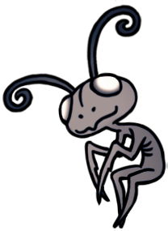
Fungal Wastes
Leg Eater is a blind charm merchant with a powerful sense of smell. He sells Fragile Charms that break upon death, also repairing broken charms for a certain fee. In order to unlock his shop, you must pay him 86 Geo. If the Knight uses the Defender's Crest Charm, he comments on the nice smell and gives the Knight a 20% discount for charm repairs. If the Knight wears a full set of Unbreakable Charms from Divine, he goes up to find her. Upon the Knight's return to Divine's tent, she thanks the Knight for the final gift, while the Knight notes the Leg Eater's dismembered claws on the floor.
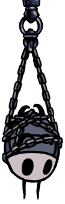
Colosseum of Fools
Little Fool charges you the participant fee for participating in each Trial. 100 Geo for the Trial of the Warrior, 450 Geo for the Trial of the Conqueror, and 800 for the Trial of the Fool. They dream of proving themself to Lord Fool through battle once again.
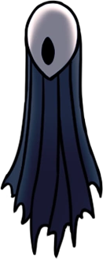
Watcher's Spire
Lurien was known as the watcher as he used to have a large telescope to watch over the City of Tears from the Watcher's Spire. He was most loyal to the King, and thus volunteered to be a Dreamer in order to protect Hallownest and the City of Tears. He can be found in the Watcher's Spire and the Knight must defeat his guards in order to reach his physical body. When first encountered in the Resting Grounds, he and the other Dreamers try to seal the Knight in the Dream realm, believing that their seals on the Hollow Knight (HK) should stay.
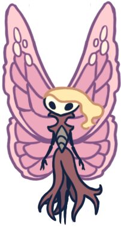
Pleasure House | City of Tears
Marissa once performed in the Pleasure House for crowds of people from the City of Tears, but due to the Infection, less and less people showed up. She passed at some point, yet her spirit continues to sing for no one. If the Knight listens to her, she asks them if they would like to listen to her sing again, as she misses singing for an audience again. Dream Nail can be used on her for 1 Essence like all other spirits.
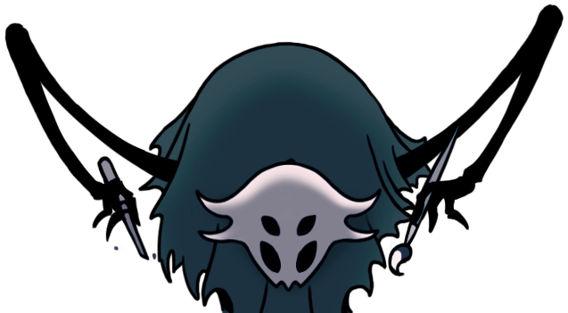
Deepnest
The Mask Maker appears to be knowledgable on the History of Hallownest as well as the History of the Pale King (specifically the hundreds of Vessels in the Abyss), also noticing the Knight's Void origins. There are three different masks they have a chance of wearing upon the Knight's entrance, but they can also be unmasked using Desolate Dive or Descending Dark Spell. Their goal is to provide "faces" for the faceless bugs of the Kingdom, but also say that in Hallownest it is difficult to tell whether a bug's face is a mask or their true face.
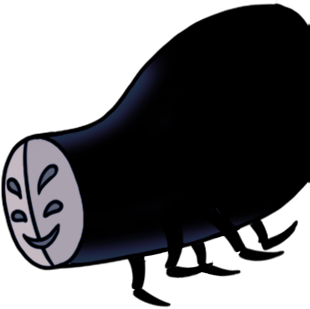
Deepnest
Few need the Midwife's services in Deepnest because of the Infection, so she simply stays in her room. Every time the Knight listens to her, she attempts to eat the Knight after she finishes talking, but does not take damage when hit by the Nail. She is also one of the few characters who are concious of being Dream Nailed, shooing out the Knight every time they try. She also comments on the Weaversong Charm if equipped.
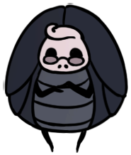
Fog Canyon
Millibelle is a fraudoulous banker who runs away with your Geo once you have deposited 2250 Geo or more into her bank and rested on a bench or used the Stagways. The Geo placed in her bank will stay there even upon death, for a starting fee of 100 Geo. When she runs away with your money, she can be found again in the Pleasure House hot springs where you can bounce her around with the nail (harmlessly), causing Geo to fall out of her shell. The total amount of Geo that you may collect is the amount deposited*1.5.
Wanderer
Mister Mushroom talks in incomprehensible Shroomish unless you have the Spore Shroom Charm equipped. He does not appear to be talking to the Knight however, even when listened to. He only acknowledges the Knight's prescence when Dream Nailed. There is a hidden Riddle Tablet at the right corner of Kingdom's Edge that hints where he will be next. If all locations are visited in the correct order, a hidden cutscene will appear at the end of the game, foreshadowing his appearance in Silksong.
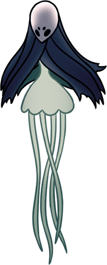
Teacher's Archives | Fog Canyon
Monomon was once the chief researcher of Hallownest. Her archives (the Teacher's Archives), contain many jumbled Lore Tablets. Quirrel used to be her assistant and apprentice. Monomon sent him away from Hallownest carrying her mask as another way to protect herself, as the Knight cannot reach her physical body without it. However, she called Quirrel back once she felt the Hollow Knight weakening. Unfortunately, Quirrel has lost most of his memory and wanders around Hallownest before finally remembering his role and helping the Knight undo the protection around Monomon, aiding the Knight in the boss fight with Uummuu.
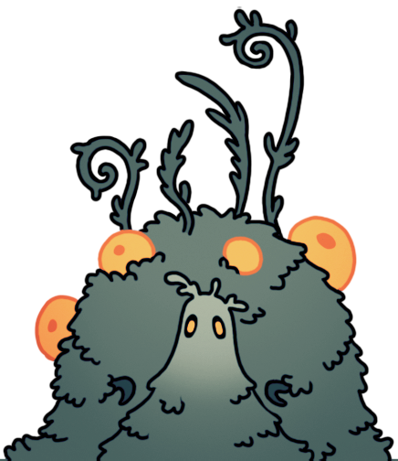
Queen's Gardens
The Moss Prophet believes that following the Radiance will lead to the unity of Hallownest in her light, unlike most Mosskin who follow Unn. They preach this to some Mossy Vagabonds in a small room known as the Moss Chapel, saying that surpressing the calling of the Radience will lead to Infection. The Moss Prophet and all their followers appear to be in the early stages of Infection and once the Knight either aquires Monarch Wings or defeats one of the Dreamers, they appear to be completey overtaken and passed on.
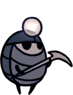
Forgotten Crossroads
Myla is just a humble miner who enjoys singing while doing her work. She wants to come up with her own songs. She can hear the crystals she mines singing, hoping to listen and understand them. When the Knight first meets her, she hopes they can drop by again. She says she is glad the Knight likes the sound of her singing. Unfortunately, after the defeat of the Soul Master, Myla starts showing early signs of Infection, and after the Knight obtains Crystal Heart, she is fully Infected, the Radiance's voice in her mind telling her to kill the Knight.
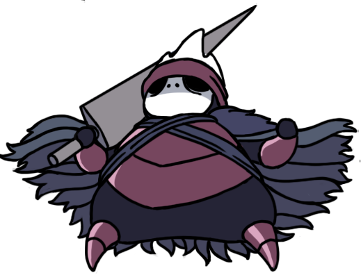
Howling Cliffs
Nailmaster Mato was once the disciple of the Great Nailsage Sly along with his brothers Oro and Sheo. He learned his signature move, the Cyclone Slash, from the Nailsage. He immediately recognizes the Knight's fighter potential and is more than happy to mentor them and teach them his signature move. Every time the Knight drops by, he greets them warmly. He does not have a good relationship with his brother Oro, but is glad to hear about his other brother Sheo. He is impressed with the fact the Knight was acknowledged by the Nailsage and comments on the other Nail Arts the Knight learns.
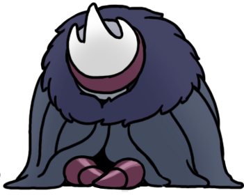
Kingdom's Edge
Similar to Mato, Oro immediately recognizes the Knight's fighter potential and will teach the Knight his signature move the Dash Slash, albeit for a price. He moved away from his brothers due to a falling out and still owes Mato something. Despite his unwelcoming nature towards the Knight, he does not hide his appreciation for them as a disciple, impressed by their Nail Arts and hopes he can be redeemed by the Nailsage through participating in the Knight's training to become a Nailmaster. If the Knight brings Oro a Delicate Flower, he initially says he would throw it away, but upon being visited again, he puts it in a vase.
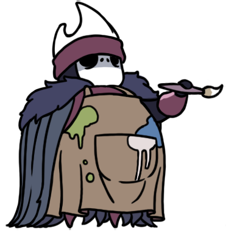
Greenpath
Sheo was considered the most skilled out of the three brothers, as he was passionate about learning and mastering his skills, driven by a desire for strength. However, that desire has faded over time as he now looks for new forms of art. He is still willing to teach the Knight his signature move, though it takes a bit of convincing, and still has a good relationship with both of his quarreling brothers. He notes the Knight's other Nail Arts that he learned from Oro and Mato, hoping teaching that teaching the Knight bought his brothers some happines, and is moved by the Knight's title as Nailmaster.
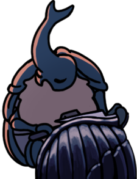
Greenpath
The Nailsmith offers to strengthen the Knight's Nail for Geo and Pale Ore. He is one of the few who has lived through the fall of Hallownest, so focused on his craft he has hardly noticed how much the world arround him has changed. Even until the present, he hones his skills in order to create the Pure Nail. His upgrades get more costly each time until he finally forges the Pure Nail. After doing so, he asks the Knight to cut him down. Agreeing will lead the Knight to find his body in the Junk Pit some time later on, but sparing him will lead the Knight to find him in Sheo's hut instead, where he models for Sheo's sculpting and helps him create wooden figures as well, earning the Knight the "Happy Couple" achievement.
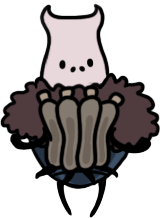
Dirtmouth
Nymm is a bug who arrived in Hallownest after the Grimm Troupe is banished. He shares a similar appearrance to Brumm, albeit without the mask and bulk. If the Knight completes the Ritual of the Grimm Troupe, Nymm does not appear. He gives the Knight the Charm "Carefree Melody" when listened to, saying it makes him think of something and someone he has lost and forgotten.
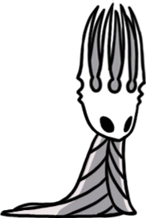
White Palace (Dream Realm)
The Pale King was once an enormous Wyrm, a higher being similar to that of the Radience, Unn, and so on. He cast of his shell (Cast-off Shell is his old body), and entered the minds of some bugs, granting them sapience and promising an eternal kingdom (Hallownest). In exchange for this, he asked for their worship. For a time, Hallownest was great, with extensive architecture and happy citizens. However, due to the Radience's anger at having lost her followers, the Infection started taking over (check Storyline page for more details). His corpse can be found on his throne in the White Palace, which can be accessed by using Awoken Dream Nail on a dead Kingsmould in the Palace Grounds. It is unkown how he died. His half of the Kingsoul charm is dropped when his corspe is struck.

Wanderer
Quirrel was once Monomon the Teacher's assistant before the fall of Hallownest, but was sent away carrying her mask in order to give her more protection as she entered a state of eternal slumber as a Dreamer. Unfortunately, he lost his memory and was called back to Hallownest only by a strong pull, wandering around its ruins trying to remember his purpose. Once he appears at the Teacher's Archives, he helps the Knight fight off Uummuu, and breaks the protection on Monomon. If the Knight does not have Dream Nail, he gives them advice on how to get it. Once his mentor dies, he can be found in Blue Lake once the Knight leaves Teacher's Archives, leaving behind his Nail planted in the ground when the Knight returns.
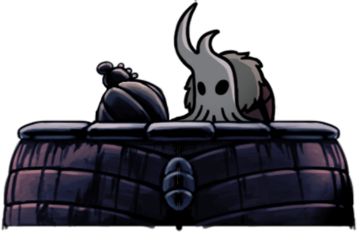
City of Tears
Lemm set up shop in the City of Tears long after the fall of Hallownest. When the Knight sells him a relic, he shares what he does know of the Kingdom's history, the Pale King, the Five Great Knights, and the Void Civilization. However, he does not like the company of anyone unless they have bought him a relic to sell. Once one of the Dreamers has died, he can be found at the Fountain Square where he often wonders out loud what happened to the Hollow Knight whose statue he sees.
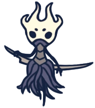
Spirit's Glade
Revek is the protector of Spirit's Glade. He only appears once the Knight has used Dream Nail on one spirit, dealing two masks of damage. He continues attacking the Knight until they exit and re-enter the room, resetting Revek back to his tomb and all the spirits to their original locations. Either that or the Knight consumes all spirits, where upon re-entering he can be found in a sullen pose. He can be temporarily dealt with through parrying, using the Dream Nail, trail of Crystal Heart, dashing with Sharp Shadow, and using any spell.